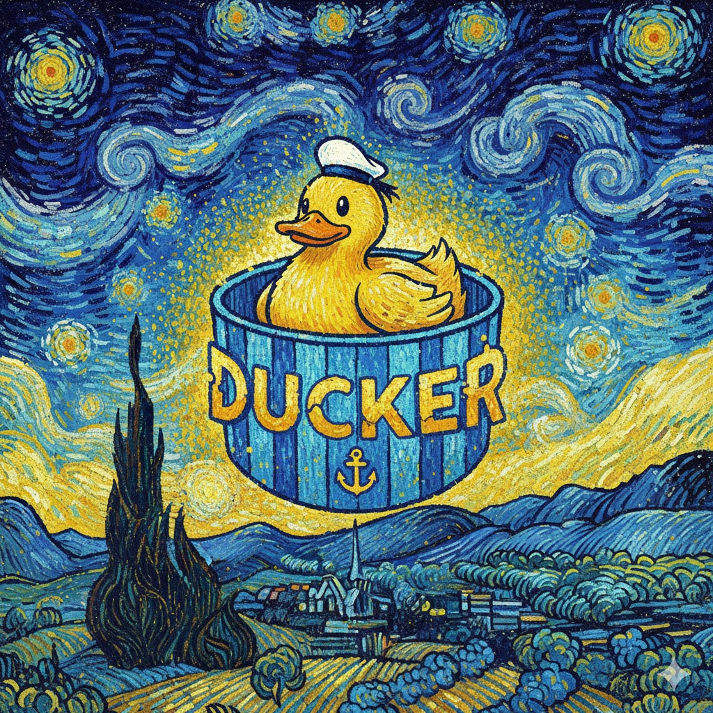

Live CPU Simulator
DUCKER 4004 Emulator
Step through Intel 4004 machine code at 740 KHz. Inspect all 16 4-bit index registers, program ROM, RAM banks, call stack, and load custom ROM programs in real time.
NSX4004 proves neural learning doesn't require billions of transistors. Train and run a 2→3→1 Extreme Learning Machine & perceptron on a 4-bit Intel 4004 (2,300 transistors, 46 opcodes), hosted inside DUCKER—a custom 16-bit 8086 DOS emulator.
Step through Intel 4004 machine code at 740 KHz. Inspect all 16 4-bit index registers, program ROM, RAM banks, call stack, and load custom ROM programs in real time.
Explore how a 2,300-transistor 4-bit processor executes neural training and inference using Q4.4 fixed-point arithmetic and Extreme Learning Machine projections.
DUCKER.COM, 1,410 bytes)

Built with CMake, NASM, and Python 3. Read the architecture notes for the full story behind Q4.4 fixed-point learning on 1971 silicon.
output/roms/ and DOS binaries in output/bins/
bash setup.sh bash scripts/build.sh bash scripts/test.sh